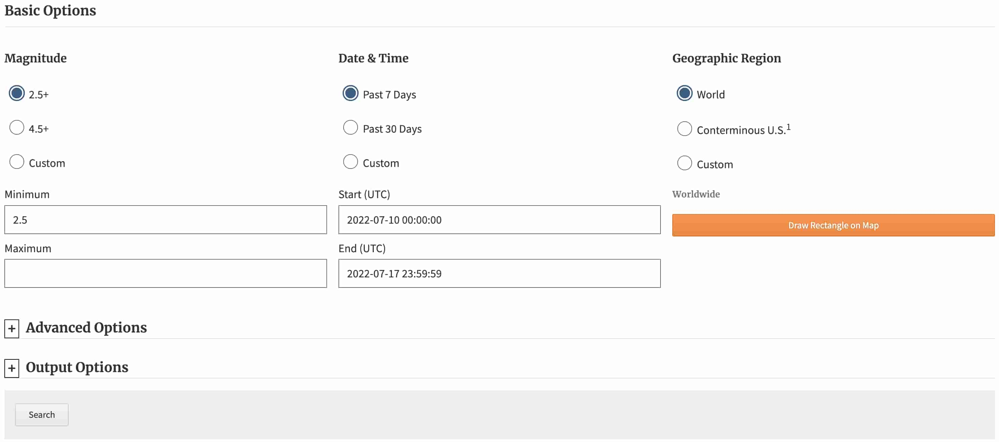
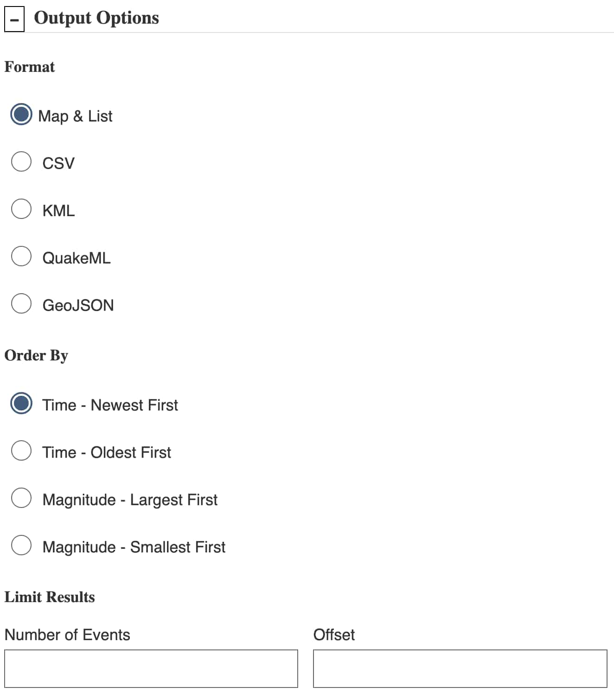

地震目录#
地震目录中包括了海量地震的信息，而通常用户只需要使用其中的一小部分，因而需要对 地震目录进行筛选。对地震目录进行筛选的准则一般有如下几条：
根据地震发震时刻筛选
根据震中位置（即震中经纬度）筛选
根据震源深度筛选
根据地震震级筛选
这一节介绍如何筛选、下载与使用地震目录。
在线搜索和查看地震目录#
USGS 提供了可用于在线搜索和查看地震目录的网页工具。用户既可以手动筛选和下载 地震目录，也可以方便直观地查看地震分布情况。下面演示如何使用 USGS 网站在线搜索 和查看地震目录。
访问 USGS 地震目录网站: https://earthquake.usgs.gov/earthquakes/search/， 会看到如下搜索界面：
 搜索界面分为左中右三栏：
左侧栏设置震级搜索范围，可以选择 2.5 级以上或 4.5 级以上地震，也可以自定义 地震震级最小值和最大值
中间栏设置发震时刻搜索范围，可以选择最近 7 天或最近 30 天，也可以自定义 发震时刻范围的开始时间和结束时间（UTC 时间）
右侧栏设置震中区域范围，可以选择全球地震、美国及周边地震，也可以在地图上 选中一个矩形区域
在“高级选项”中可进一步对地震目录做筛选：

Geographic Region 可以设置地震震中的范围，有两种设置方式：
指定经纬度范围限定一个矩形区域，North 必须大于 South，East 必须大于 West
指定中心点的经纬度和半径值（单位为 km）来限定一个圆形区域
Depth (km) 用于限定地震的深度范围，深度单位为 km。
Review Status 用于限定地震信息的审核状态。一般来说，经人工审核的地震信息 更加准确，但由于人工审核需要一定的时间，因而最近几小时或几天的地震信息可能 没有被人工审核过。而自动确定的地震信息实时性更好，但地震位置和震级等信息可能 不太准确。
除此之外，还可以进一步限制事件类型、事件影响力、地震目录来源、地震信息贡献者以及地震产品 类型等。读者可以自行探索。
在“输出选项”中可以设置要以什么格式输出地震目录：
 USGS 网站支持输出多种格式的地震目录：
Map & List：在地图中显示地震目录，适合直观地查看地震分布情况
CSV：CSV 格式，可以用 Excel 打开，也可以用 Python 的 pandas 模块处理
KML：Google Earth KML 格式，可以在 Google Earth 中直接打开
QuakeML: 地震学领域定义的标准地震目录格式，ObsPy 可以直接读取
GeoJSON: 一种地理空间数据交换格式，多种软件和 Python 模块均可读取
所有选项选择完毕后，点击“Search”按钮，即可以根据指定的格式输出地震目录。
{kind=link}
{kind=link}
读者可以尝试筛选出 2022 年上半年（1-6 月）全球震级大于 5.0 级、深度大于 70 km 的地震，并选择 以“Map & List”的方式输出。点击“Search”按钮后，会在浏览器中打开在线地图并展示地震分布。 左侧为地震列表，右侧为地震分布。读者可自行探索该界面中的各个按钮，以了解其更多功能。
{kind=link}
使用 ObsPy 下载地震目录#
USGS 提供的在线工具可以很直观地下载地震目录并查看地震分布，但是却不够自动化。 ObsPy 提供了从不同的地震数据中心筛选和下载地震目录的功能，并可以对得到的地震目录进行 进一步分析和处理。
下面演示如何使用 ObsPy 的 Client.get_events()
函数筛选和下载地震目录。
首先，需要导入 ObsPy 中地震数据中心数据下载客户端 Client:
from obspy.clients.fdsn import Client
接下来，我们需要初始化一个 Client 对象。
ObsPy 的 Client 支持多个地震数据中心。这里我们选择使用 USGS 地震数据中心：
client = Client("USGS")
Client.get_events() 函数
可以根据指定的参数对地震目录做筛选并下载。
下面我们将获取 2020 年上半年全球震级大于 5.0 级的地震：
cat = client.get_events(
starttime="2020-01-01",
endtime="2020-07-01",
minmagnitude=5.0
)
Client.get_events() 函数会根据
指定的参数向 USGS 地震数据中心发起请求，并返回筛选后的地震目录。其返回值是 Catalog 类型，
并被保存在变量 cat 中。
下面我们看看变量 cat 中的内容：
print(cat)
735 Event(s) in Catalog:
2020-06-30T22:10:09.644000Z | -19.543, +169.223 | 5.1 mb | manual
2020-06-30T09:24:23.549000Z | +38.154, -117.958 | 5.0 ml | manual
...
2020-01-01T03:53:29.023000Z | +52.637, +159.161 | 5.0 mb | manual
2020-01-01T00:28:20.289000Z | -5.324, +152.551 | 5.1 mb | manual
To see all events call 'print(CatalogObject.__str__(print_all=True))'
从输出中可以看到，该地震目录中包括了 735 个地震，并打印了若干个地震的基本信息。
下面我们进一步限制震源深度最小值为 70 km。加上这一限制后，满足条件的地震只有 140 个。
cat = client.get_events(
starttime="2020-01-01",
endtime="2020-07-01",
minmagnitude=5.0,
mindepth=70,
)
print(cat)
140 Event(s) in Catalog:
2020-06-30T22:10:09.644000Z | -19.543, +169.223 | 5.1 mb | manual
2020-06-24T15:38:34.463000Z | -1.602, -77.527 | 5.1 mww | manual
...
2020-01-04T07:18:18.092000Z | -36.855, +176.951 | 5.1 mww | manual
2020-01-03T15:28:54.137000Z | +11.739, -86.286 | 5.5 mww | manual
To see all events call 'print(CatalogObject.__str__(print_all=True))'
Catalog 类提供了用于绘制地震分布的
Catalog.plot() 函数，
可以直观地查看地震的分布情况。默认情况下，用圆圈表示地震，圆圈的大小代表地震
震级大小，圆圈的颜色代表地震的深度。
cat.plot();
假如我们只关心日本周边的地震，我们在数据申请时可以进一步限制地震震中的经纬度范围。下面的代码限定了 地震的纬度范围为 30°-45°，经度范围为 130°-145°：
cat = client.get_events(
starttime="2020-01-01",
endtime="2020-07-01",
minmagnitude=5.0,
mindepth=70,
minlatitude=30,
maxlatitude=45,
minlongitude=130,
maxlongitude=145,
)
print(cat)
7 Event(s) in Catalog:
2020-05-31T21:02:11.329000Z | +36.203, +140.365 | 5.2 mww | manual
2020-05-30T18:13:48.078000Z | +42.480, +143.809 | 5.6 mww | manual
2020-05-24T09:36:14.771000Z | +31.399, +140.097 | 5.2 mww | manual
2020-05-13T05:56:28.624000Z | +42.742, +139.004 | 5.0 mww | manual
2020-05-05T16:57:08.845000Z | +35.559, +140.055 | 5.1 mww | manual
2020-03-17T15:10:32.414000Z | +42.319, +138.352 | 5.0 mb | manual
2020-02-12T10:37:18.660000Z | +37.322, +141.381 | 5.2 mww | manual
经过这样的筛选之后，满足条件的地震目录只剩下了 7 个。
在绘制下面的地震分布图时，我们使用了 projection="local" 参数以绘制区域地图，并使用
resolution="i" 参数设置地图中使用的海岸线精度。
cat.plot(projection="local", resolution="i");

地震目录的读与写#
通过 Client.get_events() 函数
得到的地震目录保存在变量 cat 中。当 Python 脚本退出时，所有变量都会被销毁，变量中储存的地震目录信息
也会消失，因而需要及时将地震目录保存起来。
Catalog.write() 函数用于将地震目录保存到磁盘文件中。
下面的代码将地震目录以 QuakeML 格式保存到文件 japan-earthquakes.xml 中：
cat.write("japan-earthquakes.xml", format="QUAKEML")
/home/runner/micromamba/envs/seismo-learn/lib/python3.13/site-packages/obspy/io/quakeml/core.py:1112: UserWarning: 'quakeml:earthquake.usgs.gov/fdsnws/event/1/query?starttime=2020-01-01T00%3A00%3A00.000000&endtime=2020-07-01T00%3A00%3A00.000000&minlatitude=30.0&maxlatitude=45.0&minlongitude=130.0&maxlongitude=145.0&mindepth=70.0&minmagnitude=5.0' is not a valid QuakeML URI. It will be in the final file but note that the file will not be a valid QuakeML file.
warnings.warn(msg % obj.id)
在需要时，随时可以使用 read_events() 函数读入
磁盘文件中的地震目录。该函数值返回 Catalog 类型：
from obspy import read_events
cat = read_events("japan-earthquakes.xml")
print(cat)
7 Event(s) in Catalog:
2020-05-31T21:02:11.329000Z | +36.203, +140.365 | 5.2 mww | manual
2020-05-30T18:13:48.078000Z | +42.480, +143.809 | 5.6 mww | manual
2020-05-24T09:36:14.771000Z | +31.399, +140.097 | 5.2 mww | manual
2020-05-13T05:56:28.624000Z | +42.742, +139.004 | 5.0 mww | manual
2020-05-05T16:57:08.845000Z | +35.559, +140.055 | 5.1 mww | manual
2020-03-17T15:10:32.414000Z | +42.319, +138.352 | 5.0 mb | manual
2020-02-12T10:37:18.660000Z | +37.322, +141.381 | 5.2 mww | manual
深入理解和使用 Catalog 类#
上面提到，Client.get_events()
和 read_events() 的返回值都是
Catalog 类型。
事实上，Catalog 类是 ObsPy 中最核心的类之一，用于储存
地震目录信息。下图展示了 Catalog 类的属性及其层级关系：

Catalog 类可以当作一个列表。
像常规列表一样，我们可以对 Catalog 类里的地震事件进行循环：
for event in cat[0:2]:
print(event)
Event: 2020-05-31T21:02:11.329000Z | +36.203, +140.365 | 5.2 mww | manual
resource_id: ResourceIdentifier(id="quakeml:earthquake.usgs.gov/fdsnws/event/1/query?eventid=us6000a3az&format=quakeml")
event_type: 'earthquake'
creation_info: CreationInfo(agency_id='us', creation_time=UTCDateTime(2020, 8, 15, 20, 19, 58, 40000))
preferred_origin_id: ResourceIdentifier(id="quakeml:earthquake.usgs.gov/product/origin/us6000a3az/us/1597522798040/product.xml")
preferred_magnitude_id: ResourceIdentifier(id="quakeml:earthquake.usgs.gov/product/origin/us6000a3az/us/1597522798040/product.xml#magnitude")
---------
event_descriptions: 1 Elements
origins: 1 Elements
magnitudes: 1 Elements
Event: 2020-05-30T18:13:48.078000Z | +42.480, +143.809 | 5.6 mww | manual
resource_id: ResourceIdentifier(id="quakeml:earthquake.usgs.gov/fdsnws/event/1/query?eventid=us6000a2rt&format=quakeml")
event_type: 'earthquake'
creation_info: CreationInfo(agency_id='us', creation_time=UTCDateTime(2020, 8, 15, 20, 19, 54, 40000))
preferred_origin_id: ResourceIdentifier(id="quakeml:earthquake.usgs.gov/product/origin/us6000a2rt/us/1597522794040/product.xml")
preferred_magnitude_id: ResourceIdentifier(id="quakeml:earthquake.usgs.gov/product/origin/us6000a2rt/us/1597522794040/product.xml#magnitude")
---------
event_descriptions: 1 Elements
origins: 1 Elements
magnitudes: 1 Elements
Catalog 列表里的每个元素都是 Event 类型。
下面以第一个事件为例，看看 Event 类里的内容：
event = cat[0]
print(event)
Event: 2020-05-31T21:02:11.329000Z | +36.203, +140.365 | 5.2 mww | manual
resource_id: ResourceIdentifier(id="quakeml:earthquake.usgs.gov/fdsnws/event/1/query?eventid=us6000a3az&format=quakeml")
event_type: 'earthquake'
creation_info: CreationInfo(agency_id='us', creation_time=UTCDateTime(2020, 8, 15, 20, 19, 58, 40000))
preferred_origin_id: ResourceIdentifier(id="quakeml:earthquake.usgs.gov/product/origin/us6000a3az/us/1597522798040/product.xml")
preferred_magnitude_id: ResourceIdentifier(id="quakeml:earthquake.usgs.gov/product/origin/us6000a3az/us/1597522798040/product.xml#magnitude")
---------
event_descriptions: 1 Elements
origins: 1 Elements
magnitudes: 1 Elements
从中可以看出，Event 类有很多属性。在这一节里，
我们重点关注 origins 和 magnitudes。
Event 的 origins 属性也是一个列表，其元素是 Origin 类型。
print(event.origins)
[Origin(resource_id=ResourceIdentifier(id="quakeml:earthquake.usgs.gov/product/origin/us6000a3az/us/1597522798040/product.xml"), time=UTCDateTime(2020, 5, 31, 21, 2, 11, 329000), longitude=140.3648, latitude=36.2034, depth=98610.0 [uncertainty=3700.0], quality=OriginQuality(used_phase_count=135, standard_error=0.7, azimuthal_gap=52.0, minimum_distance=0.143), origin_uncertainty=OriginUncertainty(horizontal_uncertainty=5800.0, preferred_description='horizontal uncertainty'), evaluation_mode='manual', creation_info=CreationInfo(agency_id='us', creation_time=UTCDateTime(2020, 8, 15, 20, 19, 58, 40000)))]
event.origins 之所以是一个列表，是因为，对于任意一个地震，可能有多个机构或多种不同方法给出多个不同的震源信息。
在这个例子中，event.origins 中只包含了一个元素（即一个震源信息）。
origin = event.origins[0]
print(origin)
Origin
resource_id: ResourceIdentifier(id="quakeml:earthquake.usgs.gov/product/origin/us6000a3az/us/1597522798040/product.xml")
time: UTCDateTime(2020, 5, 31, 21, 2, 11, 329000)
longitude: 140.3648
latitude: 36.2034
depth: 98610.0 [uncertainty=3700.0]
quality: OriginQuality(used_phase_count=135, standard_error=0.7, azimuthal_gap=52.0, minimum_distance=0.143)
origin_uncertainty: OriginUncertainty(horizontal_uncertainty=5800.0, preferred_description='horizontal uncertainty')
evaluation_mode: 'manual'
creation_info: CreationInfo(agency_id='us', creation_time=UTCDateTime(2020, 8, 15, 20, 19, 58, 40000))
从上面的输出中可以看到，Origin 类的属性中包含了我们关心的震源
信息。比如，可以通过下面的代码，输出地震震源的发震时刻、纬度、经度和深度信息：
print(origin.time, origin.latitude, origin.longitude, origin.depth)
2020-05-31T21:02:11.329000Z 36.2034 140.3648 98610.0
同样的，Event 的 magnitudes 属性也是一个列表，
其元素是 Magnitude 类型。
print(event.magnitudes)
[Magnitude(resource_id=ResourceIdentifier(id="quakeml:earthquake.usgs.gov/product/origin/us6000a3az/us/1597522798040/product.xml#magnitude"), mag=5.2 [uncertainty=0.062], magnitude_type='mww', origin_id=ResourceIdentifier(id="quakeml:earthquake.usgs.gov/product/origin/us6000a3az/us/1597522798040/product.xml"), station_count=25, evaluation_mode='manual', creation_info=CreationInfo(agency_id='us', creation_time=UTCDateTime(2020, 8, 15, 20, 19, 58, 40000)))]
mag = event.magnitudes[0]
print(mag)
Magnitude
resource_id: ResourceIdentifier(id="quakeml:earthquake.usgs.gov/product/origin/us6000a3az/us/1597522798040/product.xml#magnitude")
mag: 5.2 [uncertainty=0.062]
magnitude_type: 'mww'
origin_id: ResourceIdentifier(id="quakeml:earthquake.usgs.gov/product/origin/us6000a3az/us/1597522798040/product.xml")
station_count: 25
evaluation_mode: 'manual'
creation_info: CreationInfo(agency_id='us', creation_time=UTCDateTime(2020, 8, 15, 20, 19, 58, 40000))
下面的代码将输出地震震级和震级类型信息：
print(mag.mag, mag.magnitude_type)
5.2 mww
将 Catalog 以更易读的格式输出#
在了解了 Catalog 类的技术细节后，我们就可以很容易地从地震目录
Catalog 中获取地震的相关信息，并以更易读的文本格式输出。例如，
for event in cat:
origin = event.origins[0]
mag = event.magnitudes[0]
print(origin.time, origin.latitude, origin.longitude, origin.depth / 1000.0, mag.mag, mag.magnitude_type)
2020-05-31T21:02:11.329000Z 36.2034 140.3648 98.61 5.2 mww
2020-05-30T18:13:48.078000Z 42.4803 143.8087 89.0 5.6 mww
2020-05-24T09:36:14.771000Z 31.3991 140.0975 120.78 5.2 mww
2020-05-13T05:56:28.624000Z 42.7419 139.0038 192.61 5.0 mww
2020-05-05T16:57:08.845000Z 35.5589 140.0548 71.19 5.1 mww
2020-03-17T15:10:32.414000Z 42.3191 138.3524 230.25 5.0 mb
2020-02-12T10:37:18.660000Z 37.3216 141.3807 77.87 5.2 mww